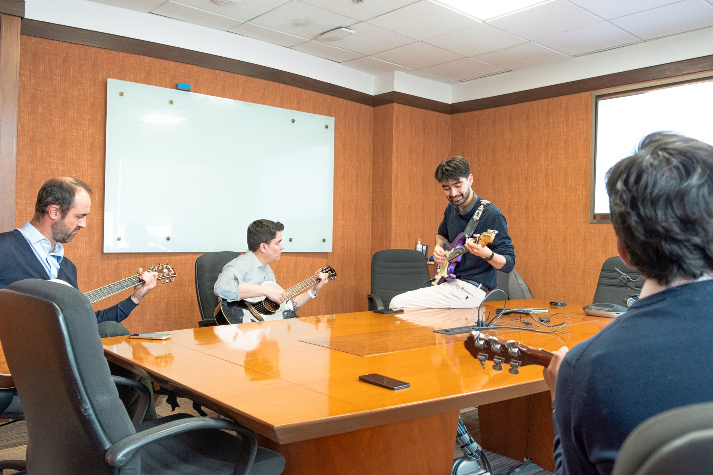

En tu empresa
Clases presenciales en horario de almuerzo o salida, donde tu equipo ya está.
Talleres de música para empresas
Y ese lugar puede estar dentro de tu empresa.
El punto de partida
A los 7 años, casi todos quisimos aprender a tocar algo. La vida adulta lo fue postergando: el trabajo, los compromisos, la sensación de que ya es tarde.
No es falta de ganas. Es falta de espacio y de una razón concreta para empezar.
¿Y si ese espacio pudiera ser dentro de tu empresa?

La solución
SolBemol lleva clases directamente a la empresa, en horario de almuerzo o salida. Sin examen al final. Sin presión de nivel. Solo música, compañeros y el gusto de tocar algo real.
Clases presenciales en horario de almuerzo o salida, donde tu equipo ya está.
Sin examen al final y sin presión de nivel. Cada quien avanza a su ritmo.
Música, compañeros y el gusto de tocar algo propio desde el primer día.
¿Otro instrumento en mente? Cuéntanos y lo conversamos.
y másHistorias
Una hora a la semana, y la música vuelve a ser parte de quiénes son.
Nunca había tocado un instrumento. Hoy tiene un piano en su casa y busca acordes y canciones por su cuenta.
Aquella vez que me di cuenta que estaba entendiendo la música, en casa pude buscar acordes y producir algo que nació de mí. Reconocí una melodía, la busqué y pude hacerlo.”
Músico de corazón. El taller le dio el escenario que quería y compañeros con quienes compartir algo más que reuniones.
No podría vivir sin música. Cuando empiezas a aprenderla, encuentras algo distinto a solo escucharla: entenderla y sentirla.”
La gente lo valora y lo considera un beneficio muy único. Da espacio para compartir; se vinculan entre ellos aunque no sean de la misma área. La banda es especial, porque es un sello de nuestra empresa.”
Aquí irá el testimonio de otra persona que participa en el taller.”
Para tu empresa
Todo esto ocurre sin que RRHH tenga que gestionarlo. SolBemol coordina espacio, instrumentos y horarios, y la empresa recibe una sola factura al mes.
El diferenciador
Hay proveedores de wellness que trabajan con música: algunos la usan para hablar de liderazgo, otros hacen percusión como team building. SolBemol es diferente: no usa la música como herramienta para otra cosa.
La música es el fin.
Conversemos
Cuéntanos de tu equipo y te mostramos cómo podría funcionar. Es más simple de lo que parece.